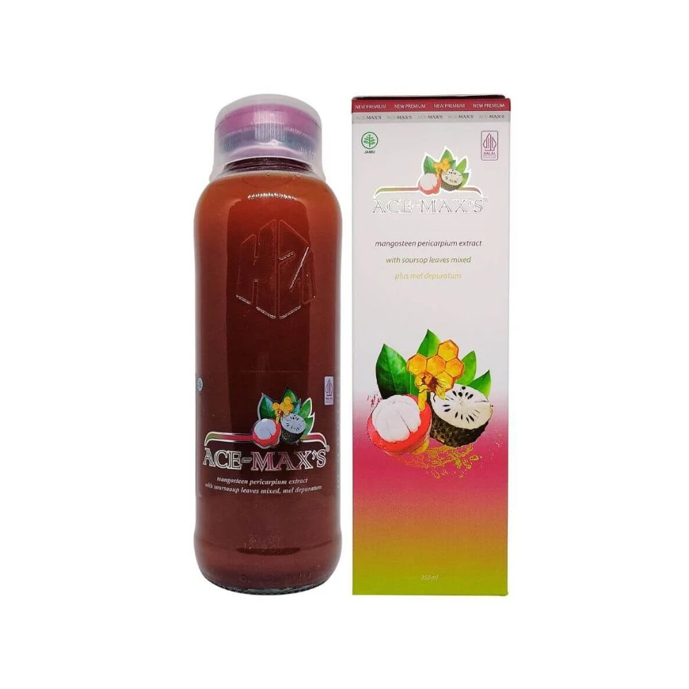
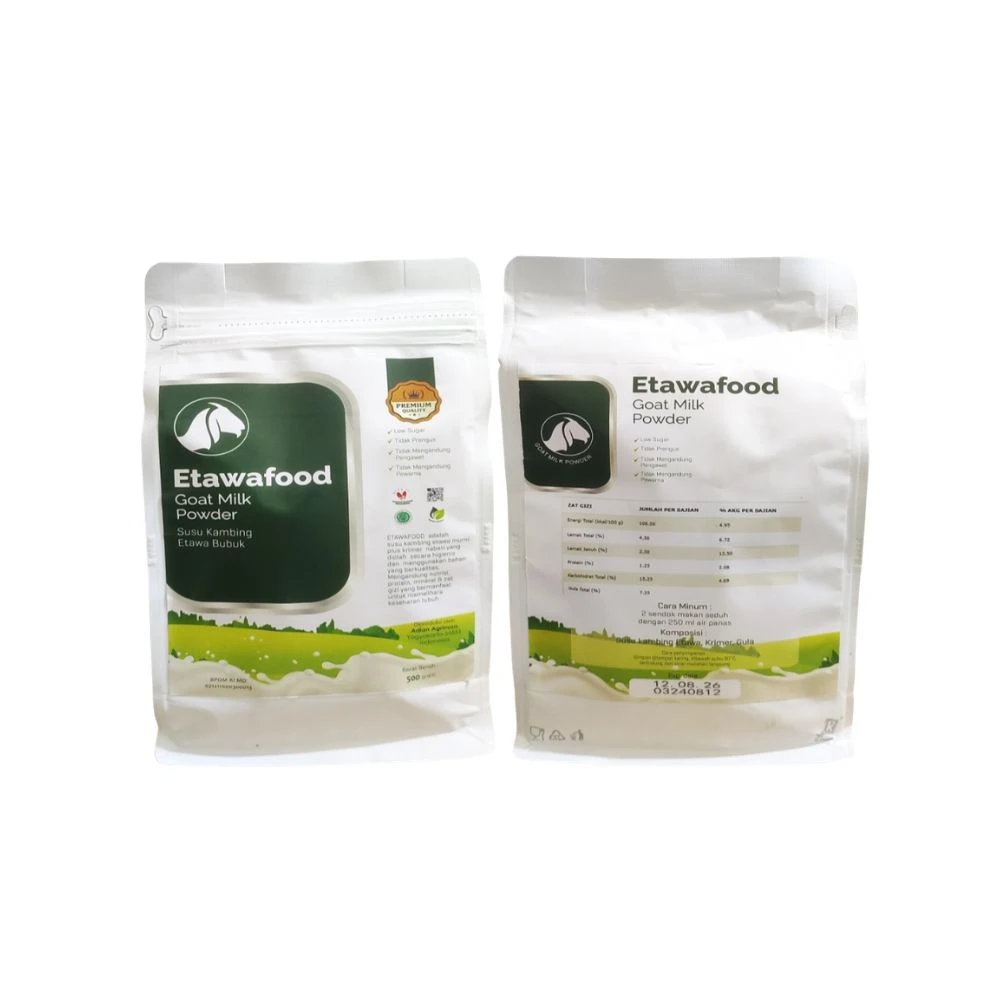

Temukan pilihanmu
Gunakan pencarian atau kategori untuk menemukan produk yang kamu cari.
Temukan herbal, madu, dan susu pilihan dalam satu tempat. Kenali produknya, lalu belanja dengan cara yang kamu suka.
Jelajahi produk

Pilihan produk untuk melengkapi
rutinitas sehari-hari.
Coba kata kunci lain atau lihat semua kategori.
Lihat foto kemasan dan informasi produk sebelum menentukan pilihan. Harga, ketersediaan, serta pengiriman mengikuti informasi pada platform tempat kamu berbelanja.
Lihat cara belanjaGunakan pencarian atau kategori untuk menemukan produk yang kamu cari.
Buka detail produk. Simpan produk ke keranjang untuk membuat daftar pilihanmu.
Gunakan tautan pembelian yang tersedia pada detail produk. Checkout dilakukan di platform tujuan.
Keranjang di sini adalah daftar pilihan. Produk tidak otomatis masuk ke keranjang marketplace.